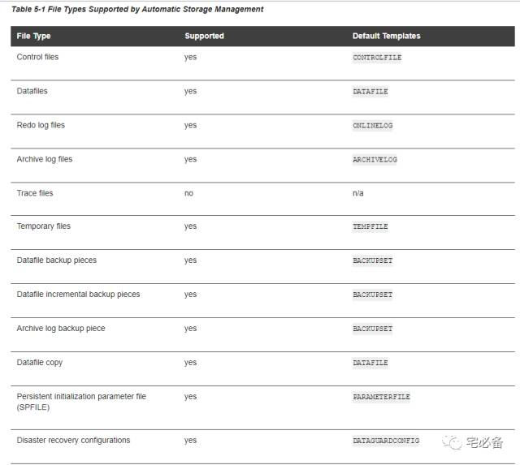
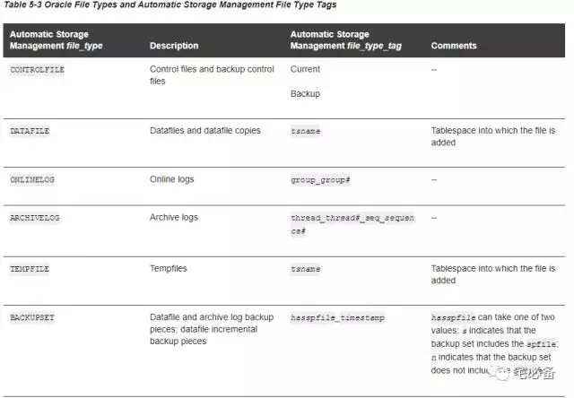

管理ASM 文件
原创 2017-11-10 Oracle 宅必备
这个专题讲ASM相关的内容
1. ASM支持的文件类型
ASM支持绝大多数文件类型，不包括trace file和操作系统文件

2. ASM 文件名称
2.1 完全限定文件名
ASM新建立的每个文件都有一个系统生成的名称，这个名称称之为完全限定文件名(fully qualified filename)
你可以通过这个名称定位到具体的文件，你也可以给文件名称起别名
格式如下:
+group/dbname/file_type/file_type_tag.file.incarnation
-
+group为磁盘组的名称，我们可以认为+号为一个文件的跟，类比linux的根目录符号/
-
dbname是文件所属数据库的DB_UNIQUE_NAME名称
-
file_type 为文件的类型，例如CONTROLFILE，DATAFILE,ONLINELOG等,详细见下图
-
file_type_tag 为文件类型的一个标签，如文件所处的表空间名称等，详细见下图
-
file.incarnation是一个file/incarnation对，用于唯一标识一个文件

一个完全限定文件名可以如下:
+dgroup2/sample/controlfile/Current.256.541956473
2.2 Numeric ASM Filename
数字ASM文件名可以用于定位一个存在的文件，它由完全限定域名而来
用来简化我们的输入
格式如下:
+group.file.incarnation
例子如下：
+dgroup2.257.541956473
2.3 别名(Alias ASM Filenames)
别名可用在创建ASM文件以及定位已存在ASM文件
注意:为文件名建立别名，将不受Oracle Managed Files 管理，如数据文件不会在表空间删除时删除
我们可以为除了根(+)目录外所有目录以及文件指定别名，和完全限定文件名和数字文件名不同的是它不可以以数字对的形式结尾，如123.456
+dgroup1/myfiles/control_file1
+dgroup2/mydir/second.dbf
新建文件时指定别名，其首先创建一个完全限定文件名，再添加一个别名，我们可以通过2者来定位文件
新建文件时未指定别名的话，哪怕是后来添加别名，我们也不能通过别名来定位该文件
如下为一些数据库使用别名定位文件的例子：
-
别名会通过v$视图反映出来。例如我们查询v$datafile时文件名显示的为别名
-
控制文件中指向的数据文件和在线重做日志
-
参数文件中的控制文件名称
3. 使用ASM 文件名
3.1 为ASM文件名建立别名
ALTER DISKGROUP dgroup1 ADD ALIAS '+dgroup1/mydir/second.dbf'
FOR '+dgroup1/sample/datafile/mytable.342.3';
ALTER DISKGROUP dgroup1 ADD ALIAS '+dgroup1/mydir/second.dbf'
FOR '+dgroup1.342.3';
3.2 修改文件名别名
ALTER DISKGROUP dgroup1 RENAME ALIAS '+dgroup1/mydir/datafile.dbf'
TO '+dgroup1/payroll/compensation.dbf';
3.3 删除别名
注意该命令只可以删除别名，不可以删除系统生成的名称
ALTER DISKGROUP dgroup1 DROP ALIAS '+dgroup1/payroll/compensation.dbf';
3.4 从磁盘组删除文件
ALTER DISKGROUP dgroup1 DROP FILE '+dgroup1/payroll/compensation.dbf';
ALTER DISKGROUP dgroup1
DROP FILE '+dgroup1/sample/datafile/mytable.342.372642';
3.5 OMF管理的文件建立
CREATE TABLESPACE tspace2 DATAFILE '+dgroup2' SIZE 200M AUTOEXTEND ON;